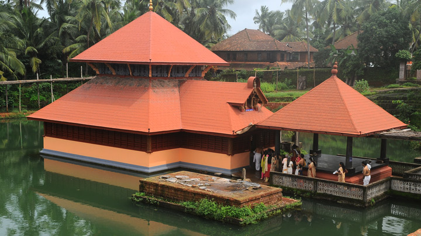

| n the northern tip of Kerala lies the Ananthapura Lake Temple, the only lake temple in Kerala. The rectangular lake, supplied with regular spring water, hosts this magnificent temple. It is considered the moolasthanam (original abode) of Lord Ananthapadmanabha, the deity of the famous Sree Padmanabhaswamy Temple in Thiruvananthapuram. This 9th-century temple situated 30 km from Bekal in Kasaragod district. The view of the hillocks from the temple is extremely famous. Babia, the vegetarian crocodile and temple guardian, is popular among all the visitors. The drive to the temple in itself is extremely peaceful and calming. n the northern tip of Kerala lies the Ananthapura Lake Temple, the only lake temple in Kerala. The rectangular lake, supplied with regular spring water, hosts this magnificent temple. It is considered the moolasthanam (original abode) of Lord Ananthapadmanabha, the deity of the famous Sree Padmanabhaswamy Temple in Thiruvananthapuram. This 9th-century temple situated 30 km from Bekal in Kasaragod district. The view of the hillocks from the temple is extremely famous. Babia, the vegetarian crocodile and temple guardian, is popular among all the visitors. The drive to the temple in itself is extremely peaceful and calming. |  |